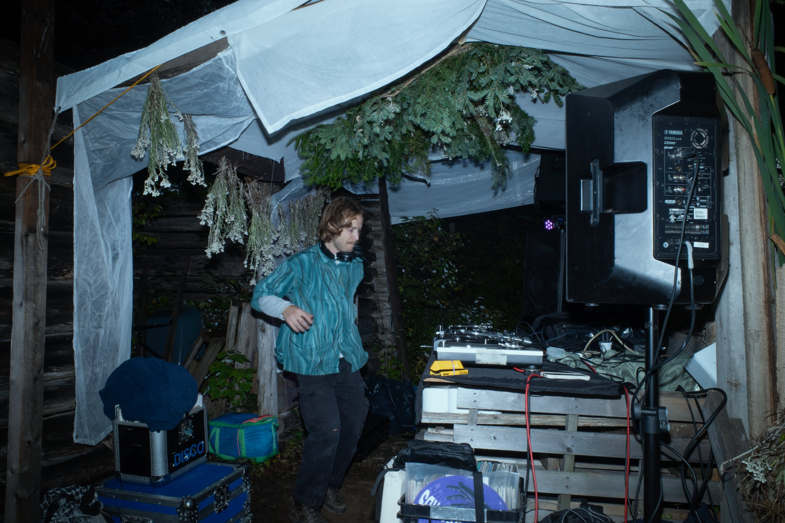

Jupiter Jazz
Jupiter Jazz explore les mondes cosmiques et percutants de la musique électronique, allant de la house à la techno, survolant les sonorités trance des années 90, les rythmes breakés, l’acid et le côté punk d’horizons lointains. Un éventail d’influences qui influencent ses sets, toujours dansants et hypnotiques.

Dj Stoopify
Dj Stoopify a fait ses classes avec des dj sets 100% CDs, forgeant son univers sonore dans un amalgame de styles. Que ce soit de la soul, du funk, de la house ou de l'electro, chaque track est portée par un groove qui fait bouger les corps et l'esprit. Une sélection affinée pour le dancefloor.

Chiennasse
Chiennasse se distingue par un style intense, autour de rythmes rapides et de basses puissantes. Une electro énergique et percutante, avec des sons trance, des breaks, et une bonne dose de queerness pour un set qui ne laisse personne indifférent.
On se book chacun de notre bord, avec nos univers respectifs, ou ensemble en b2b (duo) et en b2b2b (trio).
booking@sassytrance.com